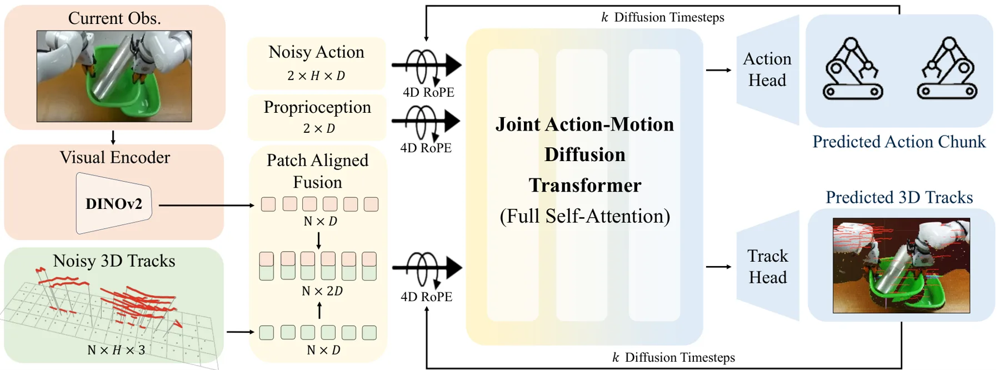
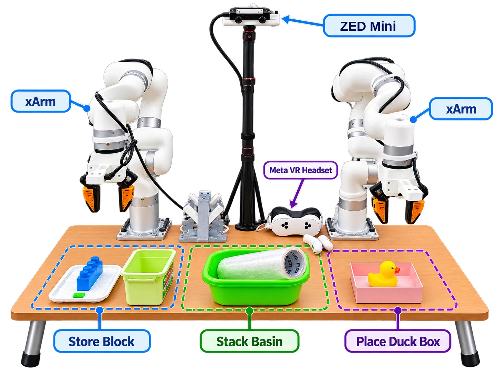
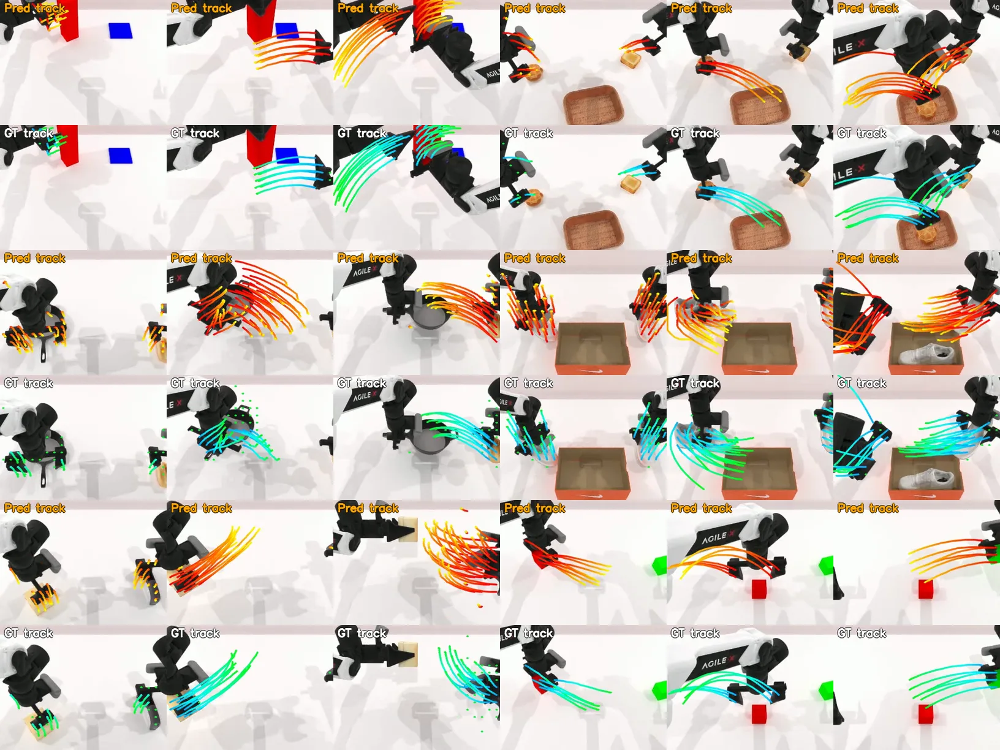
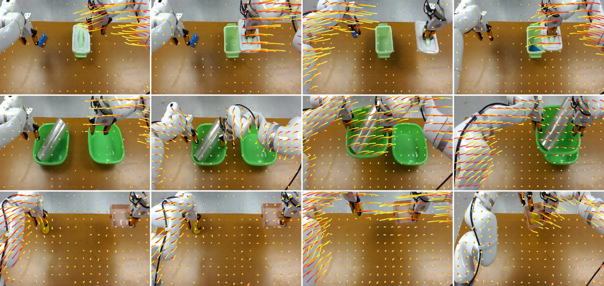

JAMB：面向双臂操作的联合动作-运动扩散
JAMB: Joint Action-Motion Diffusion for Bimanual Manipulation
把双臂动作与未来三维点轨迹放进同一个扩散过程联合去噪，用 4D RoPE 把两模态锚在共享时空坐标里互相修正，从而显式建模“动作会怎样改变场景”。
作者、单位与技术谱系 · Research context
作者与单位
研究脉络
- Diffusion Policy / DP3方法基座关系：沿用扩散策略的动作 chunk 生成，新增联合轨迹去噪[arXiv 官方 HTML v1]
- GAP（端点 3D 几何预测）方法上游关系：把端点几何条件化改为全时程轨迹联合去噪[arXiv 官方 HTML v1]
- ATM（2D 轨迹引导策略）方法上游关系：把图像平面轨迹升级为度量 3D 轨迹[arXiv 官方 HTML v1]
- PointWorld 的运动加权思路方法上游关系：沿用其轨迹加权以抑制静态背景点[arXiv 官方 HTML v1]
合作网络
- Chuyang Xiao、David HeldCMU Robotics Institute → JAMB 项目关系：共同署名/作者单位[arXiv 官方 HTML v1]
- Peilin MengUniversity of Michigan → JAMB 项目关系：共同署名/跨机构合作[arXiv 官方 HTML v1]
- JAMB论文作者 → jam-bimanual.github.io关系：项目页入口[arXiv 官方 HTML v1]
- 真实世界轨迹监督管线CoTracker3 / FoundationStereo / FastFoundationStereo → JAMB 真实实验关系：公开技术依赖[arXiv 官方 HTML v1]
作者、单位、同等贡献与通讯标注来自论文 e-print 作者块；技术接续来自正文对 DP3、GAP、ATM、PointWorld 的引用与消融设置；未发现公开证据之外的机构或师生关系。
方法本质拆解 · What actually changed
训练了什么？
DINOv2 视觉编码器加 4 层 DiT（隐藏维 1024、8 头），在 RoboTwin 2.0 每任务 100 条专家演示（真实世界每任务 50 条）上训练 200 epoch，AdamW、学习率 1e-4、batch 64、cosine decay 加 500 步 warmup，训练用 100 个扩散步、推理用 10 步 DDIM；动作与轨迹目标先按维度 min–max 归一化再加噪。论文没有报告对视觉编码器的额外预训练或大规模微调，属于在既有视觉骨干上训练扩散策略。
加了什么约束与先验？
新增约束是 patch 对齐的未来 3D 点轨迹目标、共享世界坐标系的 4D RoPE 锚点、按运动幅度加权的轨迹损失与 λ_track 加权的联合目标；约束作用在扩散状态（动作与轨迹 token）与注意力相对位置编码上。仿真里轨迹真值由 patch 中心投影到场景几何后在仿真器中跟踪获得，真实世界则由 CoTracker3 的 2D 轨迹结合 FoundationStereo 的度量深度提升到共同世界系。
推理做了什么？
动作与轨迹从独立高斯噪声出发，用同一去噪调度联合更新 10 步 DDIM，最后按训练集统计反归一化；只执行预测动作，生成的轨迹仅用于分析与可视化。推理时未来观测与真值轨迹不可用，当前深度图由 FastFoundationStereo 估计以提供 4D RoPE 需要的 3D 位置，因此几何条件本身带有深度估计误差。
方法本质是什么？
本质是让动作假设与未来 3D 运动假设在同一条去噪轨迹中互相修正，把“动作会如何改变场景”变成可监督的几何变量；共享时空坐标锚定让两模态在注意力中可直接比较，从而在双臂耦合场景中把物体运动作为协调依据，而不是只靠动作分布拟合。
单目 RGB 与本体状态 + patch 对齐 3D 轨迹查询 + 共享时间步联合去噪与 4D RoPE 锚定 → 动作与未来 3D 运动互相修正，双臂协调成功率显著提升。

桥接价值Bridge
桥接价值
它把“动作生成”与“未来三维场景运动”放进同一个去噪过程互相修正，使策略不只拟合动作，还显式预测 patch 对齐的未来 3D 点轨迹，为几何先验进入决策变量提供了可监督接口。对可靠状态估计与具身决策而言，这提示了一类可复用的接口：把预测的几何量当作与动作同级的隐变量，而不是事后后处理或固定条件。
方法与模块Method
方法摘要
DINOv2 把单目 RGB 编成 patch token，每个 patch 配一条噪声 3D 轨迹查询并融合成 token；与左右臂状态 token、双臂动作 token、扩散时间步 token 一起进入 4 层 DiT（隐藏维 1024、8 头）做全自注意力联合去噪。4D RoPE 用世界坐标位置与轨迹时间编码 token 间相对关系，动作 token 的锚点在去噪早期取当前末端位置、后期插值到动作导出位置。训练目标为 L=L_action+λ_track·L_track，轨迹损失按终点运动幅度加权以抑制近静态背景点。
可迁移模块
可迁移的是：patch 对齐的 3D 轨迹查询构造（每个视觉 patch 一条，轨迹视野 H_p=16）；动作与轨迹共享扩散时间步的联合去噪；4D RoPE 的“世界位置 + 轨迹时间”锚定与随去噪进度插值的权重调度；运动幅度加权 w_min+(1−w_min)σ(κ(‖P‖−τ)) 形式的损失加权。它们都能搬到 VIO/SLAM 的运动先验学习或策略的空间条件化里。

证据Evidence
关键证据与数字
RoboTwin 2.0 的 16 个任务平均成功率 83.4%（Sync-bimanual 85.2%、Seq-coordinate 81.6%），超过最强基线 23.9 个百分点；Sync 表内最强基线为 ATM 63.2%，DP3 58.1%、DICP 57.5%、GAP 45.3%、DP 45.8%。真实世界三任务平均 85.6%（Store Block 83.3%、Stack Basin 93.3%、Place Duck Box 80.0%），比 GAP 高 21.2 个百分点、比 DP3 高 50.0 个百分点。未来 3D 轨迹预测在 8 个任务验证集上平均 ADE 7.6 mm、FDE 10.0 mm。easy-to-hard 泛化平均 17.9%，对照 GAP 4.3%、DICP 3.9%、DP3 1.7%、ATM 0.0%；同类框架下全时程 3D 轨迹（17.9%）优于全时程 2D 轨迹（9.3%）与端点 3D 几何（10.3%）。
边界与下一步Limits & Next Step
边界与风险
作者明确承认方法目前使用单目视角与固定查询网格，真实世界的轨迹监督依赖点跟踪与深度估计精度（CoTracker3 + FoundationStereo/FastFoundationStereo），噪声监督会直接污染几何目标。实验边界同样明显：easy-to-hard 下绝对成功率只有 17.9%，说明外观/背景分布变化或多臂协同的困难阶段仍然脆弱；真实实验只在两个 xArm 与一台固定 ZED Mini 上、每任务 30 次 rollout，统计分辨率有限；推理时只执行动作、轨迹只用于分析，因此没有基于预测轨迹的闭环纠错，也没有与力/触觉信息结合。
下一步实验
论文提出的方向是高效多视角融合、自适应查询选择与噪声监督鲁棒性；可操作的下一步是把轨迹查询改为带不确定性的自适应选择，并把预测轨迹转成协方差加权约束。对照实验可直接沿用其消融阶梯：仅动作去噪（61.4%）、轨迹回归监督（73.9%）、固定轨迹条件化动作（76.3%）、联合去噪（81.7%）与去掉 4D RoPE（74.1%），同时报告成功率、轨迹 ADE/FDE（14.8→7.6 mm 的改善路径）以及失败模式。
{kind=link}

{kind=link}

{kind=link}
